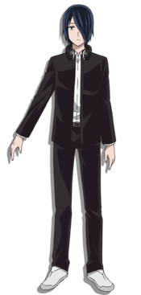

主要腳色介紹
四宮輝夜
身為總資產200兆元的，掌握鐵道、銀行、汽車行業，旗下足有上千家子公司，名列四大財團之一的『四宮集團』其本家直系統帥四宮雁庵的長女，是為真真正正的千金名媛。
正如其血統所代表的優秀，在演藝、音樂、武藝等各個領域都留下了出色的成績，是個名副其實的『天才』。
有極高的自尊心，因此才會發生“想讓他給我告白”的趣事，實際相當的喜歡白銀，還因此喜歡上白銀會長的兇狠眼神，但是自己一直都不承認。
白銀御行

質樸剛健，聰明睿智，學園考試成績永遠第一名（全年成績：第九名→第四名→第一名），即便在全國，也是能與競爭頂點之位的天才們勢均力敵的猛將！
與多才多藝的輝夜截然相反，他以其一心求學而得眾人敬畏尊重，因其模範般的舉止而被推選為學生會長。
因為長期在學生會工作，繁忙的工作導致白銀睡眠嚴重不足，因此有嚴重的黑眼圈，眼神在周圍人看來就像在施加威壓一般。
有著極高的自尊心，因此才會發生“想讓她給我告白”的有趣事。實際相當的喜歡四宮輝夜。看似完美無缺的白銀，實際上因為家境不好，平常一直都在做兼職。
藤原千花
父親是政治家，母親是外交官，從小被母親教授外國語言，反倒日語不太擅長。
對音樂舞蹈方面有極其強的天賦，小學四年級獲得了皮蒂亞鋼琴大賽的全國金獎，但之後隱退。
一心戀愛八卦（但實際上面對真正有深度的戀愛話題毫無經驗），面對學生會發生的事全不在意的天然ky系女孩，同時也因為此被輝夜在此方面記恨。
常在學生會室舉行一些遊戲或者活動，但經常因為作弊被會長他們發現而敗北，也總在關鍵時刻出現破壞戰局。
雖然成績只是中等，但IQ130以上，實際因為某些原因學習不上心。
石上優
是玩具製造商的兒子，所以對帳目處理的方法相當清楚,同時對於遊戲方面有著專業的見解。
不愛社交，是班上的邊緣存在，因為初中的時候的一件事，有過相當深的心理陰影，被同年級女生不加掩飾地討厭。
看似相當陰鬱，實際內心十分溫柔，對於認真的人有著好感並會暗中幫助，也會為了他人自背黑鍋。
對氣氛的理解遠勝藤原千花，會在戰局陷入僵局時出面相助（即使是意外）。
“石上真男人”！！